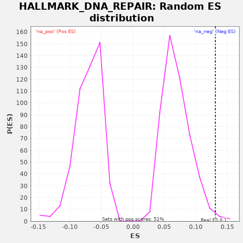

| | | Dataset | X_enriched_genes copy |
| Phenotype | NoPhenotypeAvailable |
| Upregulated in class | na_pos |
| GeneSet | HALLMARK_DNA_REPAIR |
| Enrichment Score (ES) | 0.13102274 |
| Normalized Enrichment Score (NES) | 1.8735615 |
| Nominal p-value | 0.0118811885 |
| FDR q-value | 0.018413117 |
| FWER p-Value | 0.243 |
Table: GSEA Results Summary
 Fig 1: Enrichment plot: HALLMARK_DNA_REPAIR
Fig 1: Enrichment plot: HALLMARK_DNA_REPAIR
Profile of the Running ES Score & Positions of GeneSet Members on the Rank Ordered List
| SYMBOL | RANK IN GENE LIST | RANK METRIC SCORE | RUNNING ES | CORE ENRICHMENT | | 1 | IMPDH2 | 74 | 0.372 | 0.0032 | Yes |
| 2 | APRT | 119 | 0.318 | 0.0079 | Yes |
| 3 | VPS28 | 157 | 0.278 | 0.0130 | Yes |
| 4 | GPX4 | 162 | 0.276 | 0.0197 | Yes |
| 5 | NME4 | 177 | 0.263 | 0.0260 | Yes |
| 6 | ADRM1 | 323 | 0.187 | 0.0255 | Yes |
| 7 | BCAP31 | 361 | 0.170 | 0.0306 | Yes |
| 8 | SURF1 | 374 | 0.167 | 0.0369 | Yes |
| 9 | RAE1 | 455 | 0.146 | 0.0398 | Yes |
| 10 | AAAS | 502 | 0.137 | 0.0444 | Yes |
| 11 | POLR2E | 534 | 0.133 | 0.0498 | Yes |
| 12 | ERCC1 | 541 | 0.131 | 0.0565 | Yes |
| 13 | NUDT9 | 592 | 0.121 | 0.0609 | Yes |
| 14 | GMPR2 | 608 | 0.119 | 0.0671 | Yes |
| 15 | TAF10 | 641 | 0.112 | 0.0724 | Yes |
| 16 | RBX1 | 657 | 0.108 | 0.0786 | Yes |
| 17 | POLR1C | 719 | 0.099 | 0.0825 | Yes |
| 18 | DAD1 | 799 | 0.087 | 0.0854 | Yes |
| 19 | POLR2G | 877 | 0.078 | 0.0884 | Yes |
| 20 | DGUOK | 887 | 0.076 | 0.0949 | Yes |
| 21 | NELFE | 995 | 0.064 | 0.0964 | Yes |
| 22 | DUT | 1038 | 0.061 | 0.1012 | Yes |
| 23 | POLR2C | 1050 | 0.060 | 0.1076 | Yes |
| 24 | RALA | 1127 | 0.052 | 0.1107 | Yes |
| 25 | POLR2K | 1184 | 0.048 | 0.1148 | Yes |
| 26 | UMPS | 1294 | 0.040 | 0.1161 | Yes |
| 27 | POLR3GL | 1334 | 0.038 | 0.1211 | Yes |
| 28 | POLR2F | 1338 | 0.038 | 0.1279 | Yes |
| 29 | EDF1 | 1421 | 0.034 | 0.1307 | Yes |
| 30 | NME1 | 1550 | 0.029 | 0.1310 | Yes |
| 31 | POLD4 | 1806 | 0.022 | 0.1248 | No |
| 32 | VPS37D | 2027 | 0.018 | 0.1204 | No |
| 33 | RFC4 | 2182 | 0.015 | 0.1194 | No |
| 34 | PNP | 2820 | 0.008 | 0.0934 | No |
| 35 | MPG | 2868 | 0.008 | 0.0980 | No |
| 36 | EIF1B | 2881 | 0.008 | 0.1044 | No |
| 37 | MRPL40 | 3091 | 0.006 | 0.1005 | No |
| 38 | POLD1 | 3817 | 0.001 | 0.0700 | No |
| 39 | MPC2 | 4119 | -0.001 | 0.0614 | No |
| 40 | SSRP1 | 4299 | -0.002 | 0.0591 | No |
| 41 | RFC5 | 4305 | -0.002 | 0.0658 | No |
| 42 | POLR1D | 4468 | -0.003 | 0.0644 | No |
| 43 | RAD52 | 4853 | -0.005 | 0.0516 | No |
| 44 | NME3 | 4960 | -0.005 | 0.0531 | No |
| 45 | POLR2J | 5008 | -0.006 | 0.0576 | No |
| 46 | TARBP2 | 5218 | -0.007 | 0.0538 | No |
| 47 | PDE6G | 5577 | -0.008 | 0.0422 | No |
| 48 | DDB2 | 5611 | -0.008 | 0.0475 | No |
| 49 | TAF9 | 6041 | -0.010 | 0.0323 | No |
| 50 | POLR3C | 6106 | -0.011 | 0.0360 | No |
| 51 | POLE4 | 6161 | -0.011 | 0.0402 | No |
| 52 | NUDT21 | 6462 | -0.012 | 0.0316 | No |
| 53 | RFC3 | 6613 | -0.013 | 0.0309 | No |
| 54 | BRF2 | 6740 | -0.013 | 0.0313 | No |
| 55 | NCBP2 | 7157 | -0.015 | 0.0168 | No |
| 56 | RNMT | 7191 | -0.015 | 0.0221 | No |
| 57 | TYMS | 7296 | -0.016 | 0.0237 | No |
| 58 | HCLS1 | 7792 | -0.018 | 0.0050 | No |
| 59 | POLR2I | 7888 | -0.019 | 0.0071 | No |
| 60 | NT5C | 8936 | -0.024 | -0.0401 | No |
| 61 | CDA | 8988 | -0.025 | -0.0358 | No |
| 62 | GSDME | 9250 | -0.026 | -0.0423 | No |
| 63 | GUK1 | 9480 | -0.028 | -0.0472 | No |
| 64 | TAF13 | 9499 | -0.028 | -0.0411 | No |
| 65 | NELFB | 9648 | -0.029 | -0.0418 | No |
| 66 | COX17 | 9678 | -0.030 | -0.0363 | No |
| 67 | AGO4 | 9954 | -0.032 | -0.0435 | No |
| 68 | BCAM | 9959 | -0.032 | -0.0367 | No |
| 69 | NPR2 | 9982 | -0.032 | -0.0309 | No |
| 70 | SNAPC5 | 10055 | -0.032 | -0.0276 | No |
| 71 | TSG101 | 10069 | -0.033 | -0.0213 | No |
| 72 | SAC3D1 | 10275 | -0.034 | -0.0249 | No |
| 73 | STX3 | 10427 | -0.036 | -0.0258 | No |
| 74 | NELFCD | 10554 | -0.037 | -0.0253 | No |
| 75 | POLL | 10714 | -0.038 | -0.0265 | No |
| 76 | AK3 | 10778 | -0.039 | -0.0228 | No |
| 77 | TAF12 | 11153 | -0.042 | -0.0352 | No |
| 78 | CCNO | 11692 | -0.048 | -0.0560 | No |
| 79 | GTF2H3 | 11870 | -0.051 | -0.0582 | No |
| 80 | CETN2 | 11883 | -0.051 | -0.0518 | No |
| 81 | ERCC2 | 12100 | -0.054 | -0.0560 | No |
| 82 | RRM2B | 12490 | -0.059 | -0.0692 | No |
| 83 | TK2 | 12529 | -0.060 | -0.0642 | No |
| 84 | GTF2A2 | 12822 | -0.064 | -0.0723 | No |
| 85 | CMPK2 | 13012 | -0.067 | -0.0751 | No |
| 86 | ELL | 13022 | -0.067 | -0.0686 | No |
| 87 | ADA | 13120 | -0.069 | -0.0666 | No |
| 88 | GTF2F1 | 13145 | -0.069 | -0.0608 | No |
| 89 | AK1 | 13565 | -0.076 | -0.0756 | No |
| 90 | USP11 | 13592 | -0.076 | -0.0699 | No |
| 91 | TAF1C | 14062 | -0.085 | -0.0872 | No |
| 92 | POLA2 | 14269 | -0.089 | -0.0909 | No |
| 93 | RFC2 | 14348 | -0.091 | -0.0879 | No |
| 94 | VPS37B | 14443 | -0.092 | -0.0858 | No |
| 95 | CLP1 | 14448 | -0.093 | -0.0790 | No |
| 96 | XPC | 14477 | -0.093 | -0.0735 | No |
| 97 | POLR2D | 14605 | -0.096 | -0.0731 | No |
| 98 | TAF6 | 14828 | -0.100 | -0.0776 | No |
| 99 | POLH | 15016 | -0.103 | -0.0802 | No |
| 100 | CANT1 | 15052 | -0.104 | -0.0751 | No |
| 101 | POLB | 15054 | -0.104 | -0.0681 | No |
| 102 | POLR2H | 15092 | -0.105 | -0.0630 | No |
| 103 | ERCC8 | 15135 | -0.106 | -0.0582 | No |
| 104 | ADCY6 | 15239 | -0.108 | -0.0566 | No |
| 105 | GTF2H5 | 15340 | -0.110 | -0.0548 | No |
| 106 | PRIM1 | 15423 | -0.112 | -0.0520 | No |
| 107 | GTF2B | 15450 | -0.113 | -0.0464 | No |
| 108 | ITPA | 15730 | -0.120 | -0.0538 | No |
| 109 | RPA2 | 15745 | -0.120 | -0.0475 | No |
| 110 | SNAPC4 | 15800 | -0.121 | -0.0434 | No |
| 111 | GTF3C5 | 16087 | -0.128 | -0.0512 | No |
| 112 | BOLA2 | 16200 | -0.131 | -0.0500 | No |
| 113 | ERCC4 | 16440 | -0.138 | -0.0554 | No |
| 114 | ERCC3 | 16475 | -0.139 | -0.0501 | No |
| 115 | LIG1 | 16521 | -0.140 | -0.0455 | No |
| 116 | ERCC5 | 16562 | -0.142 | -0.0405 | No |
| 117 | PDE4B | 16806 | -0.150 | -0.0461 | No |
| 118 | SF3A3 | 16901 | -0.152 | -0.0440 | No |
| 119 | DCTN4 | 16993 | -0.155 | -0.0417 | No |
| 120 | SMAD5 | 17184 | -0.162 | -0.0446 | No |
| 121 | TMED2 | 17221 | -0.164 | -0.0394 | No |
| 122 | GTF2H1 | 17411 | -0.170 | -0.0422 | No |
| 123 | RAD51 | 17603 | -0.179 | -0.0451 | No |
| 124 | UPF3B | 17701 | -0.183 | -0.0432 | No |
| 125 | POLD3 | 17889 | -0.192 | -0.0459 | No |
| 126 | FEN1 | 17956 | -0.195 | -0.0423 | No |
| 127 | SRSF6 | 18050 | -0.200 | -0.0401 | No |
| 128 | NFX1 | 18357 | -0.218 | -0.0490 | No |
| 129 | SDCBP | 18443 | -0.224 | -0.0464 | No |
| 130 | POLR2A | 18547 | -0.231 | -0.0447 | No |
| 131 | DGCR8 | 18587 | -0.234 | -0.0397 | No |
| 132 | POM121 | 18588 | -0.235 | -0.0327 | No |
| 133 | ALYREF | 18667 | -0.242 | -0.0298 | No |
| 134 | CSTF3 | 18723 | -0.247 | -0.0257 | No |
| 135 | ZWINT | 18751 | -0.251 | -0.0201 | No |
| 136 | REV3L | 18758 | -0.252 | -0.0134 | No |
| 137 | ELOA | 18799 | -0.256 | -0.0085 | No |
| 138 | DDB1 | 18856 | -0.264 | -0.0044 | No |
| 139 | PCNA | 18860 | -0.264 | 0.0025 | No |
| 140 | SEC61A1 | 18869 | -0.265 | 0.0091 | No |
| 141 | POLA1 | 18913 | -0.268 | 0.0138 | No |
| 142 | RPA3 | 19050 | -0.288 | 0.0138 | No |
| 143 | ARL6IP1 | 19357 | -0.391 | 0.0049 | No |
Table: GSEA details [plain text format]

Fig 2: HALLMARK_DNA_REPAIR: Random ES distribution
Gene set null distribution of ES for HALLMARK_DNA_REPAIR